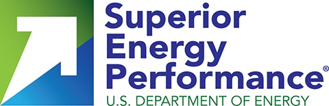

A downloadable PDF version of these FAQs is available at the bottom of the page.
Superior Energy Performance® (SEP™): The Basics
- What is Superior Energy Performance®?
- Why is SEP important?
- Why should my facility become SEP certified?
- What SEP materials can I share with my management?
- What is ISO 50001?
- Who is the SEP Administrator?
- How does a manufacturing facility qualify for SEP certification?
- What if my facility is already ISO 50001 certified?
- What are the key SEP standards and protocols?
- What is energy performance?
SEP and Other Programs
- How are ENERGY STAR™, ISO 50001, and SEP related to each other?
- How are ENERGY STAR™, ISO 50001, and SEP certifications related?
- How is ISO 50001 different from the ISO 9001 and ISO 14001 standards?
- What is the relationship between SEP and DOE’s Better Buildings, Better Plants Program? What is the difference?
- What is the difference between energy intensity, and energy performance and the SEP energy performance indicator (SEnPI) that SEP uses?
- How does the SEP Measurement and Verification Protocol assist in the Better Plants reporting of goals?
- What is Global Superior Energy Performance, and how does it relate to SEP?
Enrollment
Implementing SEP
Protocols and Resources
- What is the Measurement & Verification Protocol and how is it used in SEP?
- What is the Industrial Facility Best Practice Scorecard and how is it used in SEP? How and when do I use it?
- Are there tools and resources to help me prepare for SEP certification?
- Are the ASME System Assessment Standards required for SEP certification?
Energy Performance Improvement and Data
- How does SEP measure energy performance?
- Can I use site energy instead of source (or primary) energy?
- For the SEnPI, can I round the percentages (e.g., 4.9%) to qualify?
- Can facilities use an absolute reduction in energy to qualify for SEP?
- Can I use estimated accounting, non-metered data?
- Can facilities report the energy improvement in terms of greenhouse gas improvements?
- What is considered verifiable data?
Applying for SEP
- What is the SEP Application and when should I fill this out and submit it?
- Whom should I contact if I have any questions about the application?
- How do I submit my application?
- Can I skip the SEP Administrator and go straight to the SEP Verification Body?
- Do I have to certify after taking actions?
- When do I need SEP Administrator approval for alternative approaches?
Third Party Verification
Certificates
- Who issues my certificate?
- How long is my SEP certificate valid?
- Will DOE provide national recognition to facilities that achieve SEP certification?
Superior Energy Performance®: The Basics
What is Superior Energy Performance®?
Superior Energy Performance® (SEP™) is a certification program that verifies improvements in energy management and performance in industrial facilities. Certification requires the use of the ISO 50001 energy management standard—which follows the Plan-Do-Check-Act approach used by other ISO management system standards (e.g., ISO 9001 and ISO 14001)—and the American National Standard, ANSI/MSE 50021, which specifies energy performance criteria and additional requirements for the energy management system. Industrial facilities can take advantage of SEP tools, resources, and protocols to set energy performance targets and then achieve and measure sustained savings to earn certification at the Silver, Gold, or Platinum level.
Why is SEP important?
SEP uses the ISO 50001 energy management system standard which helps an organization institutionalize the policies, procedures, and tools to systematically track, analyze, and continually improve energy performance, including energy efficiency, use, and consumption. In response to growing concerns about energy and sustainability, a rapidly growing number of organizations around the world are adopting the internationally recognized ISO 50001 standard. By simply changing the way energy is managed, a manufacturing plant can improve productivity and reduce energy cost which is one of the largest controllable operating costs.
Why should my facility become SEP certified?
SEP has demonstrated value to US industry in a number of ways:
- Helps generate energy cost savings, much of which is from low/no cost investment. Nine SEP certified facilities realized $87,000 to $984,000 in annual savings from no-cost or low-cost operational measures. Additional results are available in this report. Facilities have saved an average of 10% of energy costs within 18 months of implementing SEP.
- Program experience has shown that SEP implementation payback is less than two year for facilities with total annual energy costs exceeding $1.5 million
- The first industrial facilities to earn SEP certification improved their energy performance from 6% to more than 25% over three years. These facilities represent a wide range of industries. View the list of certified facilities to see the results.
- SEP and the ISO 50001-based energy management system helps a facility to focus broadly on all of its energy sources and to sustain its achieved energy savings. Motivates the energy management team to institutionalize all elements of the Plan-Do-Check-Act EnMS to insure greater persistence of energy performance improvement.
- Provides a transparent and credible verification of an industrial facility’s continual improvement of energy performance. Provides third party validation to internal management decision makers of the cost-effectiveness (payback or returns) of energy savings achieved by the energy management team.
- Facilities receive recognition from the U.S. Department of Energy (DOE) for attaining SEP and, if also a Better Plants Partner, can receive even greater DOE support and recognition.
- Learn more about the business case for SEP.
What SEP materials can I share with my management?
There are numerous materials available to facilities seeking SEP certification, such as the SEP fact sheet, SEP overview presentation, and SEP case studies.
What is ISO 50001?
ISO 50001 Energy management systems – Requirements with guidance for use (or simply “ISO 50001”) is the international energy management standard that specifies requirements for establishing, implementing, maintaining, and improving an energy management system. The standard provides organizations and companies with technical and management strategies to increase energy efficiency, reduce costs, and improve productivity and environmental performance. More information on ISO 50001 can be found on the U.S. Department of Energy (DOE) ISO 50001 website.
Who is the SEP Administrator?
The U.S. Department of Energy is currently acting as the SEP Administrator.
How does a manufacturing facility qualify for SEP certification?
A manufacturing facility qualifies for SEP certification by meeting the ISO 50001 energy management standard and the ANSI/MSE 50021 standard, which specifies energy performance criteria and additional requirements for the energy management system beyond ISO 50001. The facility can pursue certification through one of two pathways: the Energy Performance Pathway or Mature Energy Pathways. Industrial facilities using the Energy Performance Pathway can qualify for SEP certification by improving their energy performance over a three-year period: 5 percent for Silver status, 10 percent for Gold, and 15 percent for Platinum. Alternatively, facilities with longstanding energy programs can use the Mature Energy Pathway to qualify. These facilities must achieve a 15 percent improvement in energy performance over 5 to 10 years and use the Industrial Facility Best Practice Scorecard to gain credit for energy management system activities, processes, or procedures that are “above and beyond” ISO 50001 requirements. Facilities using either pathway must seek a third-party audit and verification from an ANSI-ANAB Accredited SEP Verification Body. The SEP Measurement and Verification Protocol for Industry will be used to assess and calculate the improvements in energy performance. More information on the SEP and ISO 50001 certification process and review how to qualify for certification.
What if my facility is already ISO 50001 certified?
At this time, all facilities must seek the full SEP conformity audit to verify both conformance to ISO 50001 and achievement of the energy performance improvement. The ISO 50001 portion of the audit will be repeated during the SEP conformity audit, performed by an audit team that includes an SEP Lead Auditor and SEP Performance Verifier. Auditing to verify only the SEP energy performance improvement for facilities currently ISO 50001 certified is generally not currently available. However, efforts are underway to modify the SEP auditing processes defined in ANSI/MSE 50028 that would enable a more streamlined upgrade of ISO 50001 to SEP certification.
What are the key SEP standards and protocols?
SEP has a variety of related standards and protocols, described below. Access the SEP Standards and Protocols.
- ISO 50001: Specifies the requirements for an EnMS, including all aspects of procurement and use. Purchase ISO 50001:2011.
- ANSI/MSE 50021: Specifies the SEP requirements beyond those of the ISO 50001, such as performance criteria and additional requirements for the EnMS. Purchase ANSI/MSE 50021-2013.
- SEP Certification Protocol: Describes the purpose of the SEP program and defines the steps required for participation—from initial application through certification by an ANSI-ANAB accredited Verification Body.
- SEP Measurement and Verification (M&V) Protocol: Defines the procedures that will be used to measure and verify the energy performance requirements of SEP. This protocol describes how energy performance is defined for SEP and how the energy performance improvement can be demonstrated for verification purposes.
- Industrial Facility Best Practice Scorecard: Defines the credits needed to become certified to SEP using the Mature Energy Pathway.
- System Assessment Standards: Presents the requirements for conducting assessments for compressed air, process heating, pumping, or steam systems: collecting and analyzing data and reporting and documenting findings. Guidance documents are also available. While use of these standards is not required, they can be valuable for finding ways to quickly achieve energy savings. Purchase a System Assessment Standard.
- ANSI/MSE 50028: American National Standard that ANSI and ANAB use to accredit organizations that provide verification for SEP. Purchase ANSI/MSE 50028.
What is energy performance?
Energy performance can roughly be considered as the energy intensity of production normalized over time, but it is more than that. Energy performance—and how to calculate improvements in energy performance—is carefully defined in the Superior Energy Performance™ Measurement and Verification Protocol , a normative reference of ANSI/MSE 50021. SEP verifies conformance to ISO 50001 and improvements in energy performance as it is codified under the ANSI/MSE 50021 standard.
Energy Performance is defined for ISO 50001 as: “measurable results related to energy efficiency, use, and consumption,” with the following notes:
Note 1: In the context of energy management systems, results can be measured against the organization’s energy policy, objectives, targets and other energy performance requirements.
Note 2: Energy Performance is one component of the performance of the energy management system.
ISO 50001 measures energy performance by the Energy Performance Indicator (EnPI).
SEP uses the ISO 50001 definition of energy performance but energy performance is measured by the SEP Energy Performance Indicator (SEnPI) which is the ratio of “reporting-period energy consumption” to ”baseline-period energy consumption” where one (or both) of these values is adjusted so that the two consumption amounts correspond to consistent production levels and other external conditions. ”Baseline consumption” represents the consumption that would have occurred during the reporting period in the absence of energy performance improvements.
Read the protocol to learn more about energy performance and how SEP measures these improvements. Use the DOE EnPI Tool to calculate energy savings or avoided energy consumption in a way that can be verified.
SEP and Other Programs
How are ENERGY STAR™, ISO 50001, and SEP related to each other?
ENERGY STAR™, ISO 50001, and SEP™ are voluntary approaches that manufacturers can use to improve their energy efficiency and management programs.
-
ENERGY STAR™ Energy Management Guidelines are an entry point for industrial companies to start implementing a systematic approach to energy management. Companies that have used the ENERGY STAR™ energy management guidelines will find that they meet some of the ISO 50001 standard’s requirements. Full implementation of the standard may be an appropriate next step.
-
ISO 50001 is the global energy management standard that is increasingly recognized in trade and commerce. It is a structured EnMS with defined requirements that can be audited and verified by an accredited certification body. ISO 50001 requires organizations to set energy objectives and targets, set a baseline, and establish action plans to continually improve energy performance against the baseline using metrics established by the organization. This focus on measuring energy data and associated metrics drives a culture shift by engaging multiple types of employees across the organization and integrating elements of energy use and consumption into business processes. Continual improvement of energy performance focuses on significant energy uses and encompasses maintenance practices, operational control, and the design and procurement of new, modified and renovated facilities, equipment, systems and processes.
-
SEP requires conformance to ISO 50001 and the American National Standard, ANSI/MSE 50021, which adds rigor of measuring and verifying the energy performance improvement resulting from ISO 50001. SEP defines energy performance targets that motivate the organization’s management and energy team to implement additional energy saving opportunities. The SEP Measurement and Verification Protocol for industry facilitates a greater understanding of significant energy uses and allows facilities to identify additional system optimization opportunities that yield additional low/no cost operational improvements. Companies certified to SEP have stated that the third-party verification is critical in adding confidence to the energy savings calculations.
How are ENERGY STAR™, ISO 50001, and SEP certifications related?
ENERGY STAR™, ISO 50001, and SEP™ are voluntary approaches that manufacturers can use to improve their energy efficiency and management programs.
| ENERGY STAR Certification | ISO 50001 Certification | SEP Certification | |
|---|---|---|---|
| What does it certify? | Best-in-class energy performance for a facility compared to its industry. | A facility or organization that meets defined energy management system requirements. | A facility that meets energy performance improvement criteria beyond the ISO 50001 EnMS standard requirements. |
| Does certification apply to new or existing facilities? | Existing | Existing | Existing |
| How do facilities qualify? | Must score within top twenty-five percent for an industry using a national energy performance rating system approved by ENERGY STAR. | Must conform to the requirements of the ISO 50001 energy management system standard. | Must conform to the requirements of the ISO 50001 standard and SEP requirements per ANSI 50021 standard. |
| How is certification verified? | A licensed professional engineer or architect must verify that all data required for certification is valid. | An ANAB-accredited, third party certification body verifies conformance to ISO 50001. | An ANSI-ANAB accredited third party verification body verifies conformance to SEP – ANSI 50021. |
| Who administers the certification program? | U.S. EPA’s ENERGY STAR program | ANSI-ASQ National Accreditation Board (ANAB) | DOE Advanced Manufacturing Office with accreditation by ANSI and ANAB |
| Are there eligibility requirements for certification? | Buildings and industrial plants where a national energy performance rating system has been approved by U.S. EPA. | Any organization: facility or enterprise. | Currently for individual industrial facilities. |
| Is re-certification required, and what is the frequency? | Annually | Every three years to recertify, with annual surveillance audits | Every three years to recertify, with annual surveillance audits |
| Where are technical resources located? | www.energystar.gov/industry | www.energy.gov/eere/amo/toolbox-and-expertise | www.energy.gov/eere/amo/toolbox-and-expertise |
How is ISO 50001 different from the ISO 9001 and ISO 14001 standards?
ISO 50001 focuses on an organization’s ability to manage their energy sources and energy use. ISO 14001, the environmental management system standard, focuses on the environmental media the organization can impact. ISO 14001 includes energy topics, but does not prescribe detailed specifications for an energy management system. ISO 9001 for quality management systems focuses on the customer and the needs of the customer. Together, these management systems allow an organization to strategically manage their business.
ISO 9001 is the international standard that sets out the criteria for a quality management system. Companies and organizations use ISO 9001 and other standards in the ISO 9001 family to ensure that their products and services consistently meet customer’s requirements, and that quality is consistently improved. According to the latest ISO survey, more than one million companies and organizations in over 170 countries have implemented ISO 9001 since 1993.
The ISO 14001 standard specifies the criteria for an environmental management system and provides a framework for organizations to assure that environmental impact is measured and improved. The other standards in the ISO 14000 family focus on specific environmental aspects such as life cycle analysis, communication and auditing. The latest ISO survey, more than 280,000 organizations in nearly 170 countries have implemented ISO 14001 since 1999.
ISO 50001 is the energy management system standard. It provides a framework that enables organizations to improve their understanding of their energy use and consumption—and subsequently improve their energy performance. It is based on the ISO management system model of continual improvement and is designed to be compatible with existing management system standards, e.g., ISO 9001 and ISO 14001.
What is the relationship between SEP and DOE’s Better Buildings, Better Plants Program? What is the difference?
SEP and Better Buildings, Better Plants (“Better Plants”) are two U.S. DOE voluntary programs that are designed to foster continual energy improvement in energy efficiency in industry while maintaining competitiveness. The difference between the two is the scope of commitment. Better Buildings, Better Plants partners typically make a corporate commitment across multiple manufacturing facilities. Better Plants partners demonstrate their commitment to energy savings by signing a prospective pledge to reduce energy intensity—usually by 25% over ten years. Better Plants consists of more than 120 companies and nearly 1,800 plants that represent almost 8% of the total U.S. manufacturing energy footprint.
SEP aims to certify individual manufacturing facilities for improvements in energy performance that have already been achieved (retrospective), and verified by a third-party SEP Verification Body. Many companies are already participating in both SEP and Better Plants, with some Better Plants Partners implementation of SEP across multiple facilities through the SEP Enterprise-wide Accelerator. Better Plants provides structure to companies’ corporate energy management programs and can assist and motivate facilities to implement the SEP program. Companies participating in Better Plants receive technical assistance from DOE to implement SEP at one or more plants, and will receive national recognition for their accomplishments. SEP provides a method for Better Plants partner facilities to accelerate their energy savings and achieve their corporate pledge goal. SEP also provides added rigor to verifying energy performance improvement at the facility level. Learn more about Better Plants.
What is the difference between energy intensity, and energy performance and the SEP energy performance indicator (SEnPI) that SEP uses?
Energy intensity is a measure of consumption per unit of production, for example, Btus per pound of product. Traditional energy intensity (consumption per unit of production) tracking is a good metric to track but may not provide as accurate of an energy performance measurement as compared to a “normalized” energy metrics, which account for other factors that affect energy consumption at a facility, such as, weather and the fixed facility energy usage component (invariant to production or other factors). SEP requires a facility-level metric, which generally does a more accurate job of demonstrating energy performance improvement over time than simple ratios. This metric, the end product of a statistical model, is the SEP Energy Performance Indicator (SEnPI), a dimensionless measure of improvement over time within a given facility. For SEP, facilities are required to consider potentially relevant variables in addition to production levels, but may determine that several, one, or none of these variables are relevant for inclusion.
How does the SEP Measurement and Verification Protocol assist in the Better Plants reporting of goals?
There are synergies to organizations that pursue both Better Plants and SEP certification. When compiling data in support of the Better Plants goals, the SEP facility level normalized energy performance improvement data can be directly used by Better Plant partners when determining aggregated corporate level energy intensity improvement and in tracking progress toward the pledge goal. That is, some Better Plant partners are using the more rigorous SEP measurement and verification protocol for some of their plants. Therefore, Better Plant partners are encouraged to adopt the SEP Measurement and Verification (M&V) Protocol because SEP energy intensity is normalized to ALL relevant and significant independent variables, and therefore, is a more accurate method of calculating energy performance improvement. Better Plants partners are provided with tools and individualized guidance to help them use the SEP M&V protocol. Better Plants partners, however, have flexibility to use different approaches to tracking energy efficiency or energy intensity, which may not be appropriate for SEP certification. These Better Plants partners may track energy intensity (non-normalized, normalized to production or weather, or normalized per the SEP M&V protocol) at the facility level, or track a corporate-level metric, such as BTUs per dollar of revenue.
What is Global Superior Energy Performance, and how does it relate to SEP?
The United States is one of 11 members of the Global Superior Energy Performance (GSEP) Energy Management Working Group, a collaboration to accelerate the use of energy management systems in industry and commercial buildings worldwide. Member countries are leveraging their resources and taking collective action to make it easier for these sectors to adopt energy management systems. DOE is sharing best practices and successes from SEP and gaining insight about member countries’ energy management initiatives. The GSEP partnership brings value and international recognition to SEP.
Enrollment
What is SEP enrollment?
SEP enrollment begins your interaction with the SEP program administrator (DOE) and signals your interest in implementing SEP. No commitment is required. All you have to do is provide some basic information about you and your facility. In return, you will have access to benefits that are reserved for enrolled facilities, such as program updates, tips, and phone support which will help your SEP implementation.
How do I enroll for SEP?
To enroll, download and complete the enrollment form, and submit the form to the SEP Administrator: superiorenergyperformance@ee.doe.gov.
What do I get when I enroll for SEP?
By enrolling in SEP, you will be among the leading industrial facilities working to gain proficiency in using an energy management system to achieve continual reductions in energy use and costs. When you enroll in SEP, you will have access to benefits that are reserved for enrolled facilities, such as program updates, tips, and phone support which will help your SEP implementation Enrolled facilities can also make the SEP Administrator aware of any special circumstances that relate to your facility’s SEP implementation.
Implementing SEP
Can I certify my company or only facilities?
SEP is used to certify individual facilities only. However, DOE is exploring ways to make SEP certification easier and more affordable for industrial facilities through the SEP Accelerator. Implementing SEP and ISO 50001 across multiple facilities creates opportunities for companies to benefit from economies of scale and reduce implementation costs. The DOE Better Plants program is a company commitment and SEP can assist Better Plant partners in achieving their goals. Finally, DOE is launching a SEP Enterprise Accelerator where partner companies are testing strategies to scale SEP certification across three or more of their facilities.
Which pathway should I choose?
Industrial facilities may choose between two pathways when pursuing SEP: the Energy Performance Pathway and Mature Energy Pathway. Most SEP certified facilities to date have opted to qualify through the Energy Performance Pathway, which requires facilities to achieve a certain percentage of improvement in energy performance (minimum 5 percent over 3 years). However, the Energy Performance Pathway may not be practical for all facilities. Continued achievement of aggressive energy performance improvements will require greater capital investment to make continued energy efficiency gains – longer investment payback periods. The Mature Energy Pathway is designed for applicants with mature energy management programs where substantial capital investment is required to achieve at least the Energy Performance Pathway Silver target (5 percent over 3 years). The Mature Energy Pathway requires 15 percent energy performance improvement but retrospectively over a longer time period - 5 to 10 years. The Mature Energy Pathway also requires the use of the SEP Industrial Facility Best Practice Scorecard to achieve credits based on energy management practices, energy performance improvement, and energy technology innovation. For more details, review how to qualify for certification.
Protocols and Resources
What is the Measurement & Verification Protocol and how is it used in SEP?
The Superior Energy Performance requires a facility to determine their improvement in energy performance using the SEP Measurement and Verification Protocol for Industry. Your facility will use the protocol to calculate its energy performance improvement. The ANSI-ANAB Accredited SEP Verification Body will use the protocol to confirm that your facility achieved the SEP energy performance improvement target. This protocol offers a best practice methodology to 1) verify the results and impact of an industrial facility’s implementation of ISO 50001; 2) track energy performance changes over time; and 3) document energy performance normalized to production and other relevant variables. Facilities should consult and become familiar with the protocol’s requirements early on in the implementation process.
What is the Industrial Facility Best Practice Scorecard and how is it used in SEP? How and when do I use it?
The Superior Energy Performance Industrial Facility Best Practice Scorecard assesses the maturity of a facility’s energy management program through a scoring system. An industrial facility uses the Scorecard if they pursue SEP certification through the Mature Energy Pathway. The scorecard’s credits are organized under two major focus areas: Energy Management and Energy Performance Improvements. Energy management credits can be acquired by implementing best practices that are above and beyond the requirements of ISO 50001. Credits for energy performance improvement require a manufacturing facility to improve its energy performance beyond the minimum threshold required by SEP or to implement innovative technologies and strategies (e.g., combined heat and power, renewable energy, and others).
Are there tools and resources to help me prepare for SEP certification?
Yes, DOE developed a variety of technical resources to help facilities implement an energy management system or determine energy performance improvement, including software tools, guidance documents, and in-person assistance from trained and qualified professionals. The key resources are:
- eGuide for ISO 50001 Implementation: step-by-step guidance, forms, checklists, and examples to assist your energy team throughout the implementation process.
- Energy Performance Indicator (EnPI) tool: assists an energy team in creating a regression analysis model to determine the SEP energy performance improvement. The EnPI tool is fully compatible with the SEP Measurement and Verification Protocol.
- Certified Practitioners in Energy Management Systems: experts that are qualified to assist facilities in implementing ISO 50001 and SEP.
Customize the implementation of an EnMS to your facility’s needs using SEP’s Toolbox and Expertise. These resources provide useful tips and guidance, but their use is not required in seeking SEP certification. Companies participating in DOE’s Better Plants Program can receive additional technical assistance to implement SEP at one or more of their facilities. These companies will also have their commitment to SEP highlighted on the DOE website.
Are the ASME System Assessment Standards required for SEP certification?
No. While SEP does not require use of the ASME system assessment standards, the documents can be extremely useful in guiding assessments and finding energy savings opportunities. Learn more about the ASME system assessment standards.
Energy Performance Improvement and Data
How does SEP measure energy performance?
ISO 50001 measures energy performance by the Energy Performance Indicator (EnPI). SEP measures energy performance with the SEP Energy Performance Indicator (SEnPI), which is the ratio of reporting-period energy consumption to baseline consumption where one or both of these values is adjusted so that the two consumption amounts correspond to consistent conditions. The energy performance improvement is one minus this ratio (or 100% minus the ratio expressed as a percent).
Details and clarifications are located in the SEP Measurement and Verification Protocol for Industry.
Can I use site energy instead of source (or primary) energy?
No. SEP uses source energy, rather than site, to more accurately account for all energy delivery system losses. Source energy accounting is also consistent with national and international greenhouse gas reporting initiatives and aligns with existing energy reporting requirements by DOE and the Environmental Protection Agency for other federal programs, including Better Plants and ENERGY STAR. For SEP, electricity and other derived energy sources are counted in terms of the primary energy required to generate the energy delivered to the facility and total facility consumption is calculated as primary energy [see Sections 3.7.1-3.7.3 of the SEP Measurement and Verification Protocol for Industry for more information on converting energy sources to primary energy].
For the SEnPI, can I round the percentages (e.g., 4.9%) to qualify?
SEP energy performance thresholds must be met by the SEnPI rounded to the first decimal point. For example, an improvement of 9.95% rounds to 10.0% (5’s are always rounded up) and meets a 10% improvement threshold, whereas a 4.9% would not meet the 5% improvement threshold. [see the SEP Measurement and Verification Protocol for Industry, Section 3.1.2]
Can facilities use an absolute reduction in energy to qualify for SEP?
No. An absolute reduction in energy cannot be used.
Can I use estimated accounting, non-metered data?
No. Estimated accounting, non-metered data is not acceptable. Organizations are required to provide data from either a calibrated utility meter or regularly calibrated sub-meters. Therefore, metered data is acceptable from utility energy bills because they include energy consumption.
Can facilities report the energy improvement in terms of greenhouse gas improvements?
No. The SEP program measures energy consumption and reports on energy performance improvement, not greenhouse gases.
What is considered verifiable data?
Only data taken from highly accurate control systems, such as revenue utility meters, and regularly calibrated sub-meters are considered verifiable with the exceptions noted in Section 3.9.3 of the SEP Measurement and Verification Protocol for Industry for small fractions of the facility’s total primary energy consumption and Section 3.9.1 for more requirements on verifiable data.
Applying for SEP
What is the SEP Application and when should I fill this out and submit it?
The SEP application is used by the SEP Administrator to gather information about the applicant, such as contact information, facility information, chosen SEP pathway, models, and any alternative approaches used. This information helps the SEP Administrator to understand the basic approaches the facility has used and whether any approvals for alternative approaches are being requested. Applicants will complete the SEP Application once the EnMS has been implemented and the energy performance improvement has been achieved. At this point, the applicant is nearly ready for the verification audit.
Before you submit your application, we strongly encourage you seek pre-approval from the SEP Administrator if you wish to qualify for SEP certification using any of the alternative approaches listed on the Application page. Pre-approval is recommended due to the amount of time to review these requests. If you request approval for alternate approaches at the same time of your application, the application process may be delayed.
Whom should I contact if I have any questions about the application?
The SEP Administrator can be contacted with any questions regarding the application: superiorenergyperformance@ee.doe.gov.
How do I submit my application?
The SEP application must be submitted to the SEP Administrator directly by email: superiorenergyperformance@ee.doe.gov.
Can I skip the SEP Administrator and go straight to the SEP Verification Body?
No. Organizations that wish to participate in SEP must submit their application to the SEP Administrator. The SEP Administrator will manage a facility’s application and provide guidance, while the SEP Verification Body will complete the verification audit.
Do I have to certify after taking actions?
No. Even if you’re not ready for SEP certification, taking steps to manage energy and reduce energy costs is still highly beneficial and a variety of tools are available to help you along on this path. You can work on cutting costs by using the ENERGY STAR™ Energy Management Guidelines, eGuide for ISO 50001 or eGuide lite, the EnPI tool, AMO energy system analysis tools, and the ASME system assessment standards. You can use the Strategic Energy Management checklist to perform a gap analysis of energy management program relative to ENERGY STAR, ISO 50001 and SEP. You may access these tools and expertise on the SEP website. Implementing the SEP requirements will position your facility to pursue certification in the future. We still encourage you to enroll if you are interested in SEP so that you receive periodic updates about new tools, resources, and program updates.
When do I need SEP Administrator approval for alternative approaches?
Situations that call for SEP Administrator approval are noted in the SEP application and SEP Measurement and Verification Protocol for Industry. We strongly encourage you seek pre-approval from the SEP Administrator before you submit your application if you wish to qualify for SEP certification using any of the alternative approaches listed. Find out more about what you need to submit for pre-approval for alternative approaches.
Approvals are necessary in the SEP Measurement and Verification Protocol for Industry if the following cases apply:
- Model data at finer intervals than weekly (such as daily or hourly) [Sections 3.4.2 and 3.5.1]
- Use a different rationale for either of the complex regression models [Section 3.4.10]
- Use a model that does not satisfy all explicit requirements of Section 3.4.1 through 3.4.10 [Section 3.4.11]
- Use an alternative modeling application method [Section 3.6.6]
- Use a non-routine adjustment [Section 3.6.7]
- Calculate primary energy for a derived energy source not listed in Table 3-5 [Section 3.7.2]
- Use one of the adjustment methods in Section 3.8.3 or others
Third Party Verification
Who can conduct the assessments/verifications?
Only ANSI-ANAB Accredited SEP Verification Bodies can conduct the audits for initial SEP certification, annual surveillance, and recertification every three years after initial certification. The SEP Verification Body selects the personnel to conduct SEP certification audits Certified SEP Lead Auditors and SEP Performance Verifier(s).
The SEP Applicant will contract with the ANSI-ANAB Accredited Verification Body. The applicant pays for the cost of the SEP certification audit unless it seeks a third party (e.g., utility) to share this audit cost.
What is involved in the 3rd party audit?
An ANSI-ANAB Accredited SEP Verification Body conducts a two-stage audit. Accreditation is based on the ANSI/MSE 50028 standard that specifies requirements for SEP Verification Bodies. The audit team will be composed of a certified SEP Lead Auditor and a certified SEP Performance Verifier.
Stage 1 of the audit is referred to as a “readiness” audit. The audit team will ensure that the SEP requirements and documentation are in order. Stage 2 refers to the “on-site” audit. The audit team will evaluate the implementation, including effectiveness, of the facility’s management system.
The time and effort of the Stage 1 and Stage 2 audits will vary depending upon the facility’s energy consumption, the chosen pathway, or experience with other ISO management system audits. The SEP applicant pays for the cost of the SEP certification audit unless it seeks a third party (e.g., utility) to share this audit cost. Facilities with existing certifications to ISO 9001 and/or ISO 14001 may have lower certification costs and audit duration than facilities without these certifications. In these cases common management system processes will have been the subject of previous audits and will already have been found acceptable. The number of audit-days typically required for the initial SEP certification audit can range from 6 to 13 audit-days (as defined in the ANSI/MSE 50028 standard for SEP Verification Bodies) and influenced by the factors above. (The audit-days are generally calculated by the number of individuals on the audit team multiplied by the duration of audit, in days.) SEP audit is not expected to impact the production facility greatly, but the audit may not be practical in a plant shut-down or extenuating circumstances.
Certificates
Who issues my certificate?
Once the SEP Verification Body confirms that an applicant facility meets SEP requirements, the SEP Verification Body will issue the certificate—not the SEP Administrator (DOE). The SEP certificate will include the Superior Energy Performance trademark and DOE logo.
How long is my SEP certificate valid?
Your SEP certificate will be valid for three years as long as annual surveillance audits are completed by your SEP Verification Body and you continue to meet the program requirements. To ensure that your SEP certification continues beyond the three years, you must apply to the SEP Administrator at least six months prior to the expiration of your SEP certification using the SEP application.
Will DOE provide national recognition to facilities that achieve SEP certification?
All facilities that achieve SEP certification will be listed on the SEP website. DOE, as the SEP Administrator, will provide you with an official certificate of attainment as well as guidelines about how you can communicate about your SEP certification success.
In addition, facilities achieving SEP certification that are also companies participating in DOE’s Better Plants initiative are eligible for additional recognition through DOE’s Better Plants program and may include increased website acknowledgement, communications by DOE to corporate partners and public announcements by DOE.